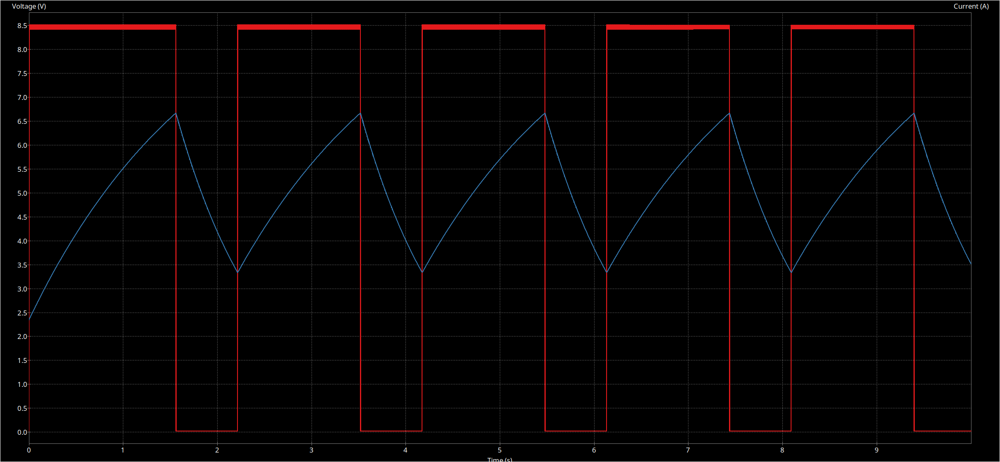

555 (And 7555)
The goal is to understand and how to use the SE/NE555 and 7555.
Pins
| Pin | Name | Description |
|---|---|---|
| 1 | Ground | Ground |
| 2 | Trigger | When this pin goes to one third of Vcc, the output goes high. |
| 3 | Output | Output high is lower than Vcc, and low is around 0V. |
| 4 | Reset | The is an inverted input. When it goes low everything resets. In normal mode this is high. |
| 5 | Control voltage | This pin determines the threshold voltage of the threshold pin. |
| 6 | Threshold | This pin will trigger high out if pin 2 is high and voltage is 2/3 of Vcc. |
| 7 | Discharge | When output is low the discharge is connected to 0V. |
| 8 | Vcc | Positive power supply |
Monostable mode
Description
This circuit makes a single pulse when triggered. This causes the output to held high for the pulse duration formula then return low.
Componenets
| Reference | Value | Remarks |
|---|---|---|
| C1 | 2u | Electrolytic capacitor |
| C2 | 10n | |
| R1 | 470k | |
| R2 | 4.7k | Replace this with a smaller resistor and led |
| U1 | 7555 https://www.alldatasheet.com/datasheet-pdf/pdf/17796/PHILIPS/ICM7555.html | 555 should also work fine |
Formulas
Pulse duration can be calculated with the formula.
Circuit

Schematics generated from KIcad. The schematics can be downloaded from the repository.
Simulation

When the trigger goes low, the output goes high and the capacitor C1 starts to charge. When the purple line goes to 2/3 of Vcc the output goes low.
Practical measurements

Cyan is the trigger input, purple is the charge on capacitor C1 and yellow is the output voltage. The values are a little of due to components not being exact.
Astable mode
Description
When in astable mode the circuit will self trigger and cause continous pulses out.
Componenets
| Reference | Value | Remarks |
|---|---|---|
| C1 | 2u | Electrolytic capacitor |
| C2 | 10n | |
| R1, R2 | 470k | |
| R3 | 4.7k | Replace this with a smaller resistor and led |
| U1 | 7555 https://www.alldatasheet.com/datasheet-pdf/pdf/17796/PHILIPS/ICM7555.html | 555 should also work fine |
Formulas
The frequency of the output oscillation is given by the formula.
The duty cycle is given by the formula.
Circuit

Schematics generated from KIcad. The schematics can be downloaded from the repository.
Simulation

Practical measurements

Measured values are
| Data | Value |
|---|---|
| Frequency | 0.466Hz |
| Duty cycle | 0.64 |
Calculated duty cycle is
The value is as close as expected.
The calculated frequency is
Again the value calculated is as close to the measured value as expected.
Improved astable mode
Description
This is an updated version of the astable mode.
Componenets
Same components as astable mode, but with the following added components.
| Reference | Value | Remarks |
|---|---|---|
| D1,D2 | 1N4001 | Diodes |
Formulas
Duty cycle formula.
Circuit
The following change is needed.

Schematics generated from KIcad. The schematics can be downloaded from the repository.
Simulation

Practical measurements
Had to use 1N4148 diode instead of 1N4001.

Measured value for duty cycle is
| Data | Value |
|---|---|
| Duty cycle | 0.47 |
Calculated duty cycle is
Changelog
| Date | Change |
|---|---|
| 2025-11-01 | Simulation and practical results added |